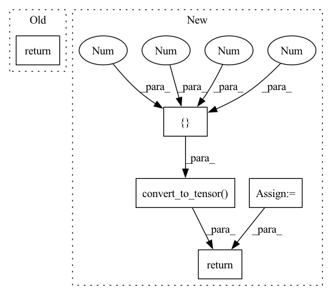

Pattern ID :17772

Before Change
// [1 level
// 0 1].
image = transform(image=wrap(image), transforms=[1.0, level, 0.0, 0.0, 1.0, 0.0, 0.0, 0.0])
return unwrap(image, replace)
def shear_y(image: tf.Tensor, level: float, replace: int) -> tf.Tensor:
After Change
// with a matrix form of:
// [1 level
// 0 1].
transforms = tf.convert_to_tensor([[1.0, level, 0.0, 0.0, 1.0, 0.0, 0.0, 0.0]])
image = transform(image=wrap(image), transforms=transforms)
image = unwrap(image, replace)
return (image, transforms) if return_affine_matrix else image
def shear_y(image: tf.Tensor, level: float, replace: int, return_affine_matrix: bool = False) -> tf.Tensor:
In pattern: SUPERPATTERN
Frequency: 3
Non-data size: 5
Instances
Fragment ID: 58525917
Project Name: leondgarse/keras_cv_attention_models
Commit Name: 443b95b047ab71dab7a0563a9c464dd6b52b9086
Time: 2022-02-23
Author: leondgarse@gmail.com
File Name: keras_cv_attention_models/imagenet/augment.py
M Class Name: AnonimousClass
N Class Name: AnonimousClass
M Method Name: shear_x(4)
N Method Name: shear_x(3)
M Parent Class:
N Parent Class:
M File Name: keras_cv_attention_models/imagenet/augment.py
N File Name: keras_cv_attention_models/imagenet/augment.py
M Start Line: 393
M End Line: 394
N Start Line: 384
N End Line: 393
'>
Before Change
// [1 0
// level 1].
image = transform(image=wrap(image), transforms=[1.0, 0.0, 0.0, level, 1.0, 0.0, 0.0, 0.0])
return unwrap(image, replace)
def autocontrast(image: tf.Tensor) -> tf.Tensor:
After Change
// with a matrix form of:
// [1 0
// level 1].
transforms = tf.convert_to_tensor([[1.0, 0.0, 0.0, level, 1.0, 0.0, 0.0, 0.0]])
image = transform(image=wrap(image), transforms=transforms)
image = unwrap(image, replace)
return (image, transforms) if return_affine_matrix else image
def autocontrast(image: tf.Tensor) -> tf.Tensor:
'>
Fragment ID: 58525916
Project Name: leondgarse/keras_cv_attention_models
Commit Name: 443b95b047ab71dab7a0563a9c464dd6b52b9086
Time: 2022-02-23
Author: leondgarse@gmail.com
File Name: keras_cv_attention_models/imagenet/augment.py
M Class Name: AnonimousClass
N Class Name: AnonimousClass
M Method Name: shear_y(4)
N Method Name: shear_y(3)
M Parent Class:
N Parent Class:
M File Name: keras_cv_attention_models/imagenet/augment.py
N File Name: keras_cv_attention_models/imagenet/augment.py
M Start Line: 403
M End Line: 404
N Start Line: 396
N End Line: 405
'>
Before Change
image *= 255
image = tf.image.resize(image, input_shape, method=resize_method, antialias=resize_antialias)
if len(image.shape) == 3:
image = tf.expand_dims(image, 0)
if self.rescale_mode == "raw":
return image
elif self.rescale_mode == "raw01":
return image / 255.0
else:
return tf.keras.applications.imagenet_utils.preprocess_input(image, mode=self.rescale_mode)
After Change
images = [np.array(Image.fromarray(image).resize(self.input_shape)) for image in images]
images = (np.stack(images) - self.mean) / self.std
images = images if backend.image_data_format() == "channels_last" else images.transpose([0, 3, 1, 2])
return functional.convert_to_tensor(images)
def imagenet_decode_predictions(preds, top=5):
from keras_cv_attention_models.imagenet.eval_func import decode_predictions
'>
Fragment ID: 58525919
Project Name: leondgarse/keras_cv_attention_models
Commit Name: 2f70b0d51c8f2b1f8664f32dc75ecc1001758946
Time: 2023-01-29
Author: leondgarse@gmail.com
File Name: keras_cv_attention_models/common_layers.py
M Class Name: PreprocessInput
N Class Name: PreprocessInput
M Method Name: __call__(5)
N Method Name: __call__(5)
M Parent Class:
N Parent Class:
M File Name: keras_cv_attention_models/common_layers.py
N File Name: keras_cv_attention_models/common_layers.py
M Start Line: 586
M End Line: 601
N Start Line: 609
N End Line: 616